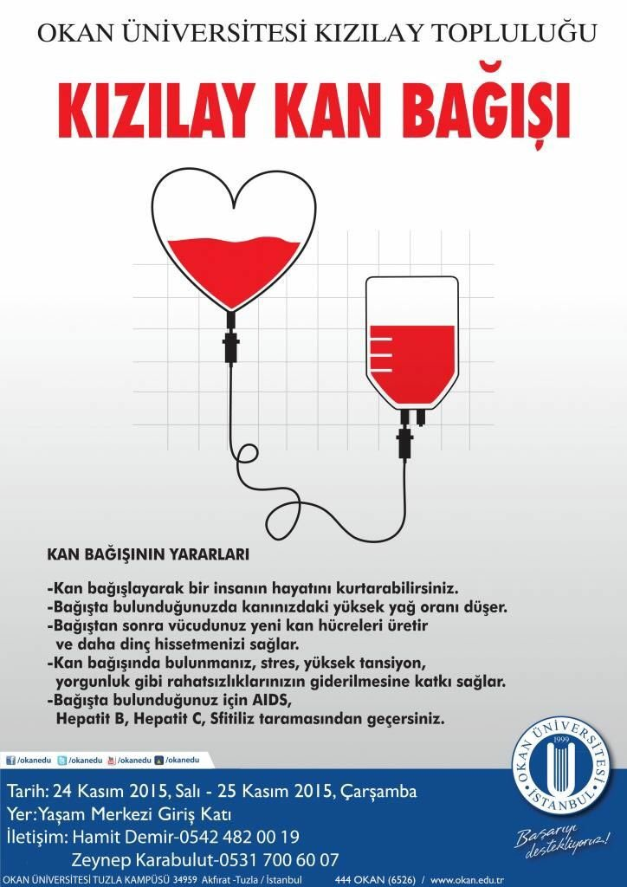
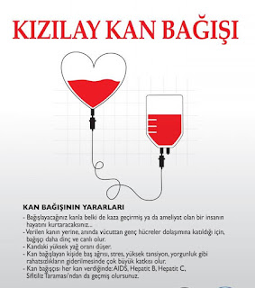

kan Bağışı
Neden Kan Bağışı Yapmalı? ?
İhtiyacı olan hastalar için doğru kanın mevcut olmasını sağlamak amacıyla her kesimden yeni kan bağışçılarına ihtiyacımız var. İhtiyacımız var:
- • Mevcut talebi karşılamak için en az 400 donör
- • Artık bağış yapamayanların yerine yılda yaklaşık 1350 bağışçı
- • Her yıl O negatif gibi öncelikli kan gruplarına sahip 3000 yeni bağışçı
- • Daha fazla gencin kan vermeye başlaması için gelecekte yeterli kan
# Bir insanın başka bir insana verebileceği en değerli hediye hayat hediyesidir, yani kandır. Yaşamın özüdür..
# Kanınız bileşenlerine ayrıldığında (kırmızı kan hücreleri, plazma vb.) birden fazla hayat kurtarır..
# Talasemi ve hemofili gibi hastalıkları olan hastalar için ve ayrıca kaza sonrası yaralanmaların, büyük ameliyatların, aneminin vb. tedavisi için düzenli olarak kana ihtiyaç vardır.
# Sağlığınızı iyileştirir.
# Kan bağışında bulunan kişilerin kalp krizi geçirme olasılığının %88, herhangi bir kardiyovasküler hastalığa yakalanma olasılığının ise %33 daha az olduğunu biliyor muydunuz?.
# Kan bağışında bulunduğunuzda vücudunuzdan 225 ila 250 miligram demir atılır ve böylece kalp hastalığı riski azalır.
# Kan Merkezi, bağışlanan kan üzerinde çok sayıda test gerçekleştirir. Bu nedenle düzenli kan bağışı sizi ciddi hastalıklardan korumaya yardımcı olur
 